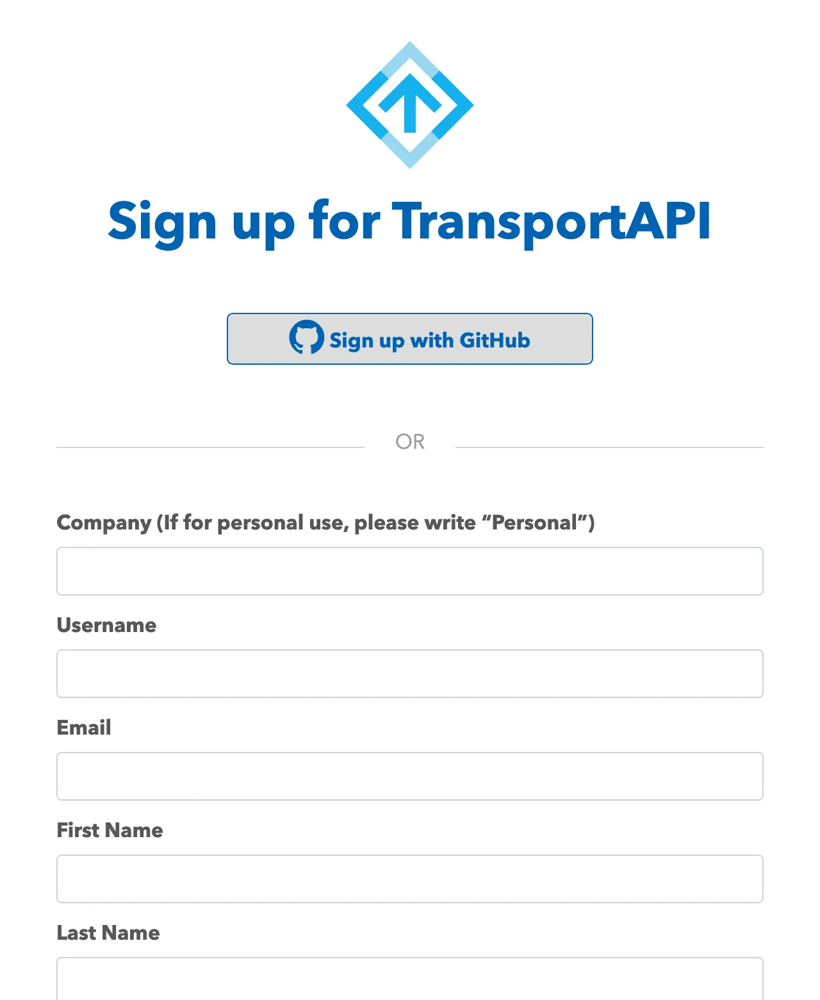
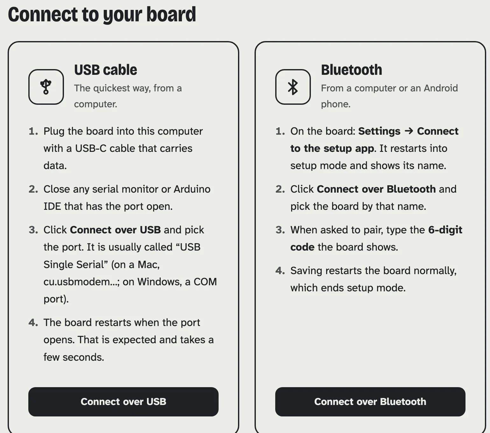
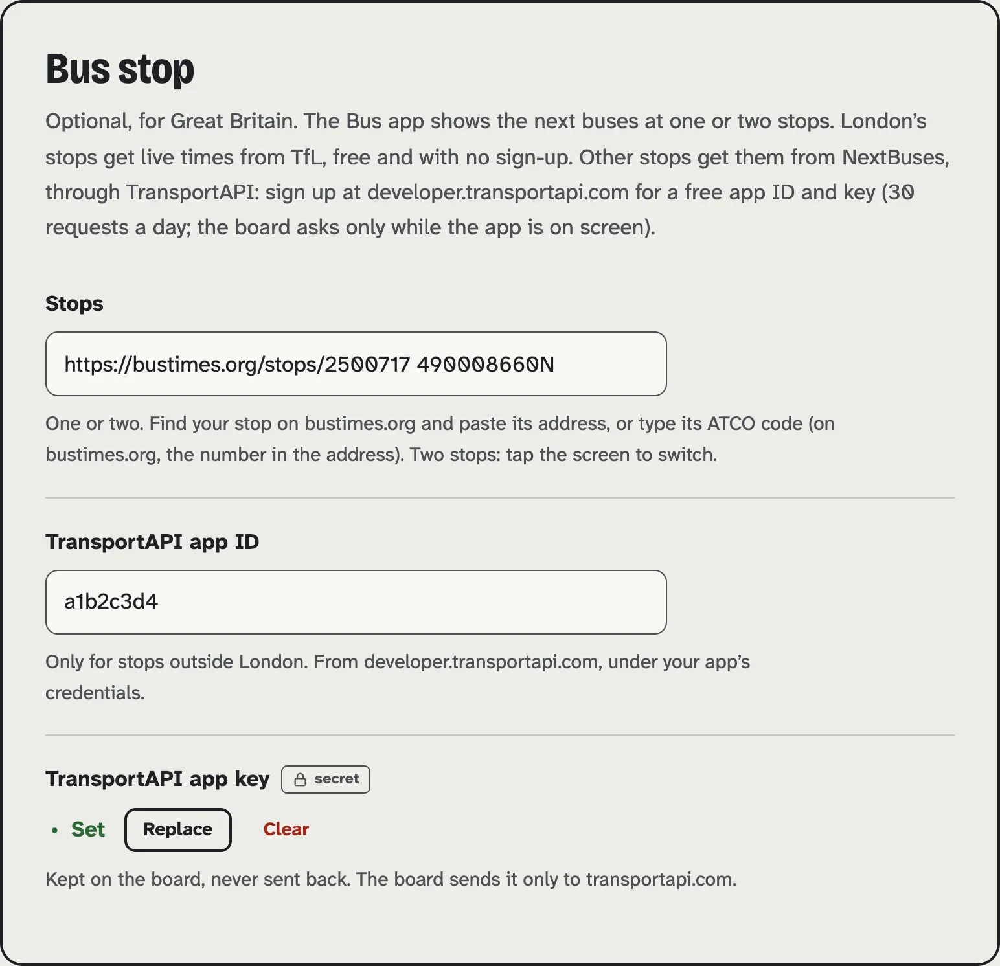

Blog ·
How to set up the Bus app: the next buses at your stop, on the fridge door
{{NAME}} 1.10 adds a Bus app: the next buses at your stop, counting down, for anywhere in Great Britain. This guide takes you through setting it up one step at a time. You don’t need to know anything technical: it takes about 15 minutes, and you only do it once.


What you need
- Your reTerminal Sticky, with {{NAME}} on it and connected to your WiFi.
- A computer with Google Chrome or Microsoft Edge, and the USB-C cable that came with the board. (An Android phone with Chrome works too, over Bluetooth. iPhones and Safari can’t talk to the board.)
- The name of your bus stop and the town it’s in.
- Outside London only: an email address, for a free TransportAPI account (step 3 explains what that is).
Step 1: Put {{NAME}} 1.10 on the board
If your board already runs {{NAME}} (its home screen has a Settings tile), it updates itself over WiFi:
- On the board, tap Settings, then Software update.
- Tap Check now. It should say version 1.10.0 is available.
- Tap Install. The board downloads it, checks it and restarts by itself. Leave it alone for a couple of minutes.

If your board still has the software it came with (Seeed’s own), {{NAME}} has to be put on it once, with the USB cable. How to install {{NAME}} walks you through it; you can do it all in Chrome, with nothing to install. It puts 1.10 on straight away, so you can skip the update above.
Step 2: Find your stop’s number
Every bus stop in Great Britain has its own number. The easiest place to find it is bustimes.org:
- Open bustimes.org and type your stop’s name and town in the search box, for example Adelaide Street Accrington.
- Pick your stop. If there are two with the same name, one on each side of the road, pick the side you catch the bus from: its page lists where the buses go.
- Look at the address at the top of your browser. The number at the end is your stop’s number. In bustimes.org/stops/2500717, it’s 2500717.
Write it down, or keep the page open: you’ll need it in step 4. You can also copy the whole address; the setup app understands either.
In London? London’s stop numbers start with 490, and their times come free from Transport for London, with no sign-up. Skip step 3 and go straight to step 4.
Step 3: Get a free TransportAPI key (outside London)
Outside London, the board gets the bus times from NextBuses, Traveline’s bus times service, through a company called TransportAPI. TransportAPI wants to know who is asking, so it gives you a key: two codes, an app ID and an app key, that work like a library card. The board shows them each time it asks for the times. It’s free, and you don’t need a credit card.
- Go to developer.transportapi.com/signup.
- Fill in the form. Where it asks for a Company, type Personal. Choose a username, and give your email address and name.
- If it asks you to pick a plan, pick the free one: 30 requests a day, free for good.
- TransportAPI sends you an email. Open it and click the link in it to confirm your address, then sign in.
- Your account comes with one app already made. Open it: its page shows your app ID (a short code) and your app key (a longer one). Keep the page open for step 4.

What “30 requests a day” means for you: each time the board fetches the times counts as one. The board only fetches while the Bus app is on its screen, every 10 minutes, and never more than 24 times a day by itself, so a few are always left over for when you press OK to get the latest. At midnight the count starts again. You will never be charged: when the 30 are used up, the board says so and waits for the next day.
Keep the key to yourself, as you would a password. Your board keeps it and sends it only to TransportAPI.
Step 4: Type them into the setup app
- Plug the board into your computer with the USB-C cable.
- In Chrome or Edge, open sticky-os.space.fast/setup.
- Click Connect over USB. A small window lists the ports: pick the one called USB Single Serial (on a Mac it may start with cu.usbmodem, on Windows it’s a COM port) and click Connect. The board restarts; that’s normal and takes a few seconds.

- In the list on the left, under Optional, click Bus stop.
- In Stops, type your stop’s number from step 2 (or paste the bustimes.org address).
- Outside London: in TransportAPI app ID, type or paste your app ID. Under TransportAPI app key, click Set, paste your app key and click Use.
- Click Save and restart at the bottom. The board saves them and restarts.

No computer? On an Android phone, open the same page in Chrome and choose Connect over Bluetooth; the page tells you what to do on the board.
Step 5: Your buses
After the restart a Bus tile appears on the board’s home screen. Tap it.
- Under the stop’s name, the black card is the next bus: its number, how many minutes until it comes (Due when it’s here) and where it’s going. Below it are the buses after it.
- Minutes in bold are live, from the bus itself. Plain ones are from the timetable.
- Swipe up for later buses: the rest of today, then tomorrow. Swipe down to go back, or press OK to come back to now.
- With two stops, tap the screen to switch between them.

If something isn’t right
- No Bus tile on the home screen: check the board shows version 1.10 in Settings → Software update, and that the stop number was saved (step 4).
- The screen above, asking for a key: the app ID or app key is missing. Go back to step 4 and enter both.
- “Can’t get the times”: check the board is on your WiFi, then press OK to try again. If it keeps saying it, check the app ID and key are typed exactly as TransportAPI shows them.
- “… doesn’t know the stop”: the stop number is wrong. Check it on bustimes.org (step 2).
- “Today’s 30 free requests are used up”: nothing is wrong. The times come back after midnight.
- The setup app doesn’t list a port: try another USB-C cable (some only charge), and close any other tab that uses the board.
Still stuck? Tell us on GitHub what the board says and the town of your stop, and we’ll help.